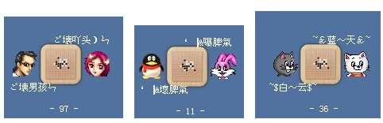
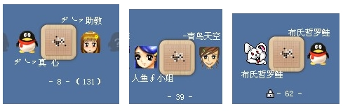

棋房见闻
五子棋缘
#1 棋房见闻作者：有志青年 发表时间：2008-5-4 17:39:50
本贴的内容转载子“今虹”的个人博客，博客地址是http://blog.sina.com.cn/hong111
特别是今虹在游戏中心的截图，很耐看！
#2 棋房见闻-1作者：有志青年 发表时间：2008-5-4 17:40:35
棋乐.木子写给棋友的小诗
《五子奕棋气如虹》-给今虹
五子连珠气如虹
随机应变巧妙中
经纬交错方寸地
黑白双剑竞纵横
送细雨打梧桐的小诗
春风化细雨
闻奏琴瑟声
梧桐奕棋趣
赛过又逢春
《温柔杀手》-送长沙丫头(中南校友)
温和行子如流水
柔若轻风似行云
隐藏玄机深不测
暗含杀手走妙着
#3 棋房见闻-2作者：有志青年 发表时间：2008-5-4 17:45:32
#4 棋房见闻-3作者：有志青年 发表时间：2008-5-4 17:49:09
数尺棋盘
你来我往
硝烟不起
笑语不断
厮杀会新朋
千里纵横
兵出将挡
干戈无声
欢谈无止
搏斗交弈友
---棋房偶得

从五子棋的文化传统来看，五子棋体现着“仁、义、礼、智、信、”。本质上是仁义之棋子，是厚爱相亲之棋。所以，万事和为贵，一团和气，能弈出珍品。弈棋是智力上的竞争！
----飞来云儿
